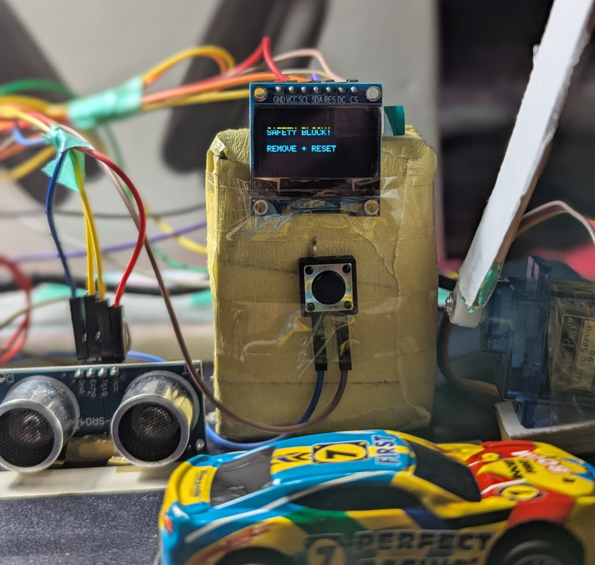

Motion and vehicle sensing
A PIR sensor detects motion, while an HC-SR04 ultrasonic sensor checks distance to confirm a vehicle and monitor the gate area.
ACADEMIC PROJECT · EMBEDDED SYSTEMS · IOT
An ESP32-powered automated gate prototype
A sensor-based loading-gate prototype that detects approaching vehicles, controls a servo-operated barrier, and enters a safety-stop state when an obstruction is detected.

PHYSICAL PROTOTYPE · 01PROJECT DEMONSTRATION
A recorded demonstration of the physical model and its gate-control behavior.
HARDWARE EVIDENCE
Photos from the actual prototype, including normal vehicle detection and the obstruction safety state.
SYSTEM OVERVIEW
A PIR sensor detects motion, while an HC-SR04 ultrasonic sensor checks distance to confirm a vehicle and monitor the gate area.
The ESP32 controls a servo motor to move the miniature barrier between its closed and open positions.
A potentiometer adjusts the gate's hold-open delay from approximately 2 to 8 seconds without changing the program.
If an object is detected within the 20 cm safety threshold while closing, the gate stops, the buzzer sounds, and the OLED asks the operator to remove the obstruction and reset.
HARDWARE & SOFTWARE
Processes sensor input and coordinates the gate state machine.
Motion detection, distance measurement, adjustable timing and safety recovery.
Barrier movement, live status messages and audible safety alerts.
Digital input/output, analog timing control, servo control, OLED communication and Serial Monitor commands.
TESTING & LEARNING
The prototype was tested for PIR-triggered entry, vehicle presence detection, adjustable hold-open timing, normal closing, obstruction detection, safety warning, reset recovery and OLED status messages. The project report records these functional checks as passing on the prototype.
False PIR triggers and unstable ultrasonic readings required sensor tuning and confirmation logic. Monitoring the vehicle zone helped prevent the gate from closing too early. The prototype also highlighted the importance of clearer wiring and easier hardware inspection.
For a future version, I would explore industrial-grade proximity sensors, a stronger actuator, RFID authorization, and event logging or IoT monitoring. This is an academic prototype, not a safety-certified industrial gate.
PROJECT LINKS
THANKS FOR VIEWING